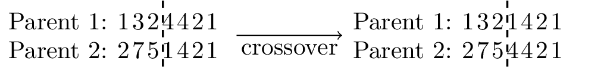

\documentclass[tikz]{standalone}
\usepackage[T1]{fontenc}
\usepackage{lmodern}
\usepackage{microtype}
\begin{document}
\begin{tikzpicture}
\node[draw=none, text width=3.5cm] at (0, 0) (start) {Parent 1: \textls[100]{1324421} \hfill \newline Parent 2: \textls[100]{2751421}};
\draw[thick,dashed] (0.45,0.5) -- (0.45,-0.5);
\draw[->] (1.5, 0) -- (3, 0) node[below,midway] {crossover};
\node[draw=none, text width=3.5cm] at (4.9, 0) (start) {Parent 1: \textls[100]{1321421} \hfill \newline Parent 2: \textls[100]{2754421}};
\draw[thick,dashed] (5.35,0.5) -- (5.35,-0.5);
% \node[draw=none, text width=3cm] at (3.5, 0) (start) {Parent 2: 2754421};
\end{tikzpicture}
\end{document}Created by David Li